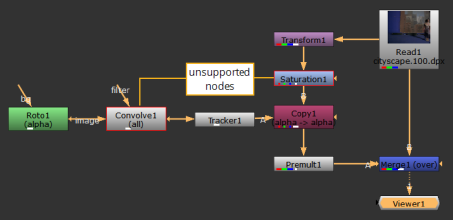

Nuke 辅助 作为许可的一部分 NukeX 或 Nuke 工作室 维护包，用作艺术家绘画、对位和跟踪的工作站。 Nuke 辅助 不支持任何 NukeX -或 Nuke 工作室 -除了 PlanarTracker 之外的特定功能，并且有一个有限的子集 Nuke 节点和功能可用。 Nuke 辅助 不支持任何自定义插件，仅支持以下节点:
|
Nuke 辅助节点 |
|||
|---|---|---|---|
|
图像 |
|||
|
棋盘 |
ColorBars |
ColorWheel |
常数 |
|
阅读 |
观众 |
||
|
绘制 |
|||
|
贝塞尔 |
径向 |
坡道 |
矩形 |
|
Roto |
RotoPaint |
||
|
注意: Bezier 只能通过 X 菜单。新闻 X 在节点图中，然后输入 贝塞尔 作为 Tcl 命令添加节点。 |
|||
|
时间 |
|||
|
框架混合 |
框架保持 |
框架范围 |
蒂米乔 |
|
时间偏移 |
|||
|
渠道 |
|||
|
添加 |
复制 |
ChannelMerge |
移除 |
|
洗牌 |
洗牌 |
||
|
颜色 |
|||
|
年级 |
反转 |
OCIO CDLTransform |
OCIO 色彩空间 |
|
OCIO 显示 |
OCIO 文件转换 |
OCIO LogConvert |
|
|
过滤器 |
|||
|
模糊 |
|||
|
Keyer |
|||
|
Keyer |
|||
|
合并 |
|||
|
AddMix |
溶解 |
KeyMix |
合并 |
|
Premult |
开关 |
Unpremult |
|
|
变换 |
|||
|
作物 |
CornerPin |
PlanarTracker |
重新格式化 |
|
跟踪器 |
变换 |
变形蒙面 |
|
|
视图 |
|||
|
JoinViews |
OneView |
ShuffleView |
分割和加入 |
|
立体浮雕 |
立体声 MixViews |
立体声重新收敛 |
立体侧边 |
|
元数据 |
|||
|
AddTimeCode |
CompareMetadata |
复制元数据 |
ModifyMetadata |
|
ViewMetadata |
|||
|
其他 |
|||
|
背景 |
点 |
集团 |
输入 |
|
输出 |
PostageStamp |
StickyNote |
|
注意: 你不能在 Nuke Assist 中使用写节点来渲染输出。
您可以加载在中创建的项目 Nuke 的其他模式和正常工作，在限制 Nuke 辅助 。无论组件是否受支持，查看器都会呈现节点树的输出。节点图中任何不受支持的节点和插件都以红色概述，并且它们的控件显示为灰色。不能修改不受支持的节点和插件的输出。

提示: 有关节点树和基于节点的合成的更多信息，请参见 了解工作流 .
Gizmos 、 Group 和 Precomp 节点可以正常加载，但是如果它们包含不受支持的任何节点 Nuke 辅助 它们在节点图中的节点周围有一个红色的轮廓，控制面板控件变灰。
注意: Nuke 辅助 允许创建自定义旋钮，但它们无法编辑。
Python 脚本像往常一样为支持的节点工作 Nuke 辅助 ,但是任何添加不受支持的节点的尝试都会在脚本编辑器输出部分或终端 (在 -T 模式)。
例如，执行 Nuke.createNode (“转换”) 将变换节点添加到节点图，但是 Nuke.createNode (“卷积”) 打印以下错误:
# 结果:
回溯 (最近一次通话):
文件 "<string>"，第一行，在 <module> 中
RuntimeError: Convolve 在 Nuke Assist 中不可用
|
|